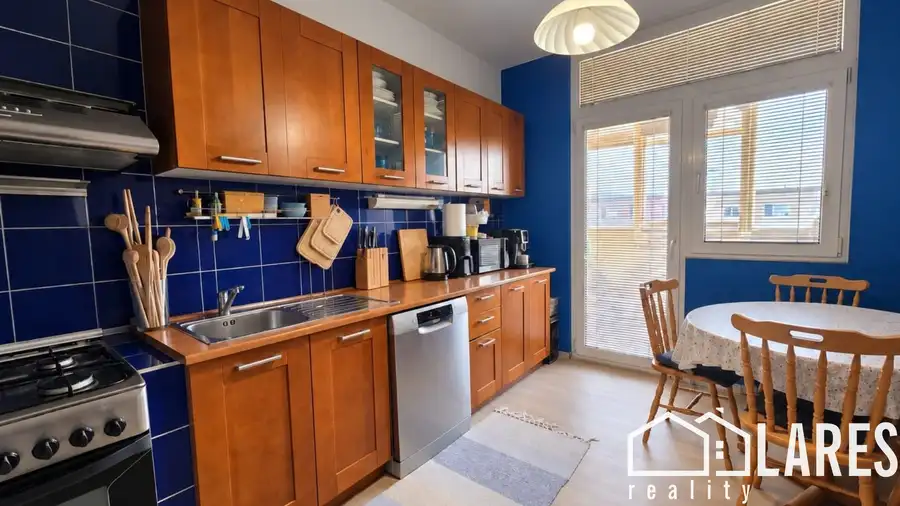
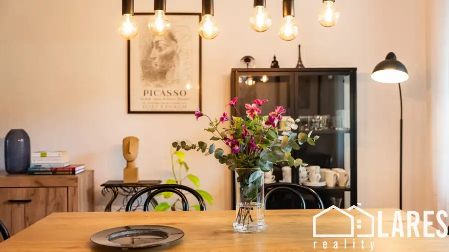
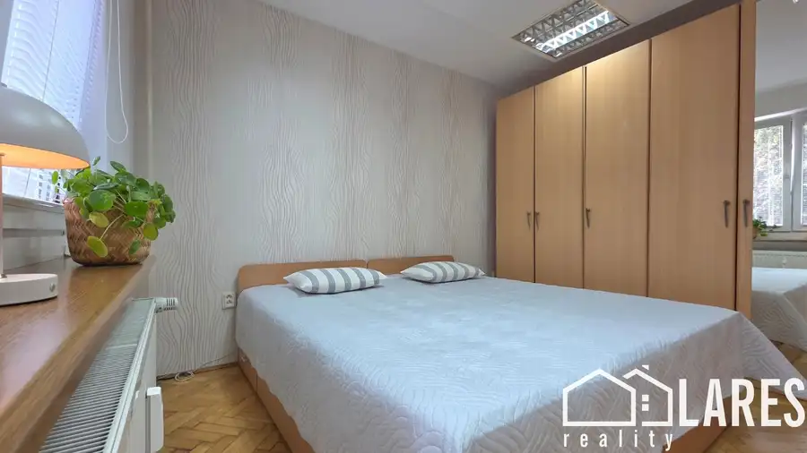

Predaj: 3-izbový byt s panoramatickým výhľadom na les – Prievidza, sídl. Kopanice – ul. Nad Terasami
Prievidza
- Dispozícia3-izbový
- Plocha63.58 m²
- Poschodie7. z 7
- StavČiastočná rekonštrukcia
O nehnuteľnosti
Tento 3-izbový byt s loggiou a výťahom sa nachádza na poslednom, 7. poschodí v panelovom bytovom dome na ulici Nad Terasami. Byt sa pýši výnimočnou a strategickou polohou na obľúbenom sídlisku Kopanice. Bytový dom je situovaný ako úplne posledný v rade, pričom priamo pred ním sa už rozprestiera iba rozsiahly les a okolité hory. Táto poloha zaručuje budúcemu majiteľovi nádherné, ničím nerušené panoramatické výhľady, maximálnu mieru súkromia a absolútne ticho bez akýchkoľvek susedov nad hlavou. Byt je ideálnou voľbou pre niekoho, kto hľadá bývanie v tesnom dotyku s prírodou, no zároveň vyžaduje plnú mestskú infraštruktúru a chce si interiér pretvoriť kompletne podľa vlastných predstáv.________________________________________DISPOZÍCIA ( pôdorys v galérii )Celková úžitková plocha 63,58 m², v ktorej je už započítaná aj klasická latková pivnica s výmerou 2,20 m² umiestnená v suteréne bytového domu. Dispozícia je navrhnutá veľmi racionálne, zo vstupnej chodby sa plynule prechádza do troch samostatných, nepriechodných izieb.Srdcom bytu je kuchyňa, z ktorej je priamy výstup na loggiu s výmerou 2,51 m²( V ). Táto orientácia je ako stvorená na rannú kávu či večerný relax s priamym výhľadom na okolitú prírodu. Dispozíciu uzatvára pôvodné umakartové bytové jadro, ktoré v sebe integruje kúpeľňu a samostatnú toaletu.________________________________________TECHNICKÝ STAV A POTENCIÁL REKONŠTRUKCIEByt je určený na kompletnú obnovu. Pre nového majiteľa to však paradoxne predstavuje obrovskú pridanú hodnotu. Neplatíte totiž za cudziu rekonštrukciu, ktorá by nemusela vyhovovať vášmu vkusu. Byt, kde si môžete zvoliť vlastné materiály, podlahy, sanitu aj kuchynskú linku podľa seba.Finančným a technickým benefitom je, že v celom byte sú už osadené plastové okná a táto investícia vám odpadá.Byt sa predáva bez zariadenia.________________________________________PREVÁDZKOVÉ NÁKLADY A BYTOVÝ DOMO bytový dom sa stará overený správca – Okresné stavebné bytové družstvo (OSBD) Prievidza. Mesačné zálohové platby sú nastavené pre 2 osoby: predstavujú sumu 233 € / mesiac. K tejto sume sa pripočítava už len individuálna spotreba elektrickej energie u dodávateľa. Bytový dom je zateplený, rekonštrukciou prešla aj strecha a parkovanie je verejné a dostupné na priestranných plochách priamo pred bytovým domom.________________________________________MOŽNOSTI FINANCOVANIA A VÝHODA PRE INVESTOROVNehnuteľnosť predstavuje taktiež mimoriadnu investičnú príležitosť s vysokým potenciálom zhodnotenia, či už na účely ďalšieho predaja, alebo na dlhodobý prenájom. V byte momentálne býva dlhodobý, overený a bezproblémový nájomník.V prípade, že kupujete byt ako investíciu, nájomník ma záujem v prenájme pokračovať, čo pre vás znamená stabilný príjem od prvého dňa bez starostí s obsadzovaním nehnuteľnosti.V prípade, že kupujete byt pre vlastné bývanie, s nájomníkom je dohodnutá férová podmienka 1-mesačnej výpovednej lehoty, takže byt budete mať k dispozícii na prerábku bez zbytočných prieťahov.________________________________________NÁZOR MAKLÉRAZa mňa je toto jedna z mála ponúk na sídlisku Kopanice, ktorá ponúka takúto kombináciu parametrov. Umiestnenie bytového domu na úplnom okraji zástavby priamo pri lese, posledné poschodie odstrihne akýkoľvek hluk zhora a loggia prístupná priamo z kuchyne len podčiarkuje rodinný potenciál nehnuteľnosti.Je to ideálne bývanie pre kupujúcich s jasnou víziou, remeselníkov alebo investorov, ktorí dokážu oceniť prémiovú polohu a chcú vytvoriť bývanie najvyššieho štandardu v top lokalite Prievidze.Dohodnite si osobnú obhliadku ešte dnes.Ing. Ľudmila Galambošová Telefónne číslo: +421 917 114 229 E-mail: ludmila.galambosova@gmail.comRealitná kancelária: LARES reality, ul. G. Švéniho, vchod 3C, Prievidza
Parametre
| Cena vrátane energií | Nie |
|---|---|
| Druh | 3 izbový byt |
| Dátum zverejnenia | 6. 10. 2026 |
| Energetický certifikát budovy | nie je |
| Orientácia | Východná, Západná |
| Podlažie | 7 |
| Počet izieb / miestností | 3 |
| Počet lodžií | 1 |
| Počet nadzemných podlaží | 7 |
| Stav nehnuteľnosti | Čiastočná rekonštrukcia |
| Typ | Predaj |
| Typ konštrukcie | Panelová |
| Umiestnenie | Posledné podlažie |
| Vybavenie | Lodžia, Pivnica, Výťah, Verejné parkovanie |
| Vykurovanie | Ústredné |
| Úžitková plocha | 63.58 m² |
Kde to je


Mohlo by Vás zaujímať

BytNové10 105 000 €Predaj: 3-izbový byt s výborným dispozičným potenciálom – Prievidza, sídl. Kopanice – ul. Na Karasiny Prievidza 3-izbový69 m²6. podlažie Tento priestranný 3-izbový byt s loggiou a výťahom sa nachádza na 6. poschodí zo 7 v zateplenom panelovom bytovom dome na vyhľadávanej ulici Na…
BytNové10 139 900 €PREDAJ veľkometrážny 3-izbový byt ( 84 m2 ) s vlastným charakterom na Nábreží sv. Cyrila v Prievidzi Prievidza 3-izbový84 m²2. podlažie Predstavujeme vám výnimočnú nehnuteľnosť, ktorá v sebe spája nadčasový dizajn, veľkorysú metráž 84 m² a jednu z najvyhľadávanejších lokalít v…
BytNové10 Cena dohodouNa prenájom: 2-izbový byt v priamom centre Prievidze (ul. Hodžu) , prízemný byt bezbariérový prístup Prievidza 2-izbový50 m²1. podlažie Ponúkame na prenájom praktický 2-izbový byt s výmerou 50 m², situovaný na prízemí bytového domu ( bezbariérový prístup ) na ulici Hodžu, v priamom…